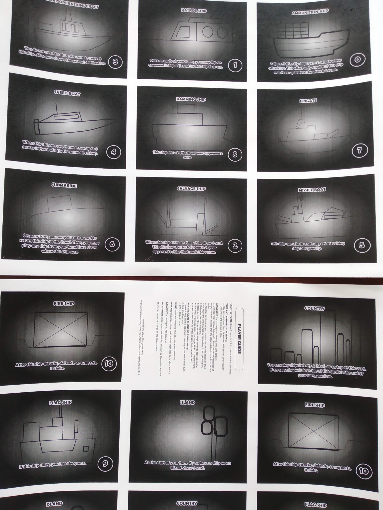

Silent Ships
September 12, 2021 by Jorge Zhang
This is a new game that I am working on that is currently unnamed. It is just 27 cards and you can make it yourself by printing page 1 twice and page 2 once.
Page 1 download.
Page 2 download.
You should have the following cards once all is said and done:
27 total cards
2 Ammunition Ship
2 Patrol Ship
2 Speed Boat
2 Special Operations Craft
2 Salvage Ship
2 Missile Boat
2 Submarine
2 Frigate
2 Ramming Ship
2 Flag Ship
2 Fire Ship
2 Country
2 Island
1 Player Aid
RULES
Ways to win the game:1. Capture the opponent's country and hold it until the end of their turn.
2. Capture the opponent's flag ship.
3. If the players stalemate or agree to end the game, the player who captured the most units wins. The player who went second wins ties.
Overview:
This game is a turn-based card game played on a 5x4 board.
Set Up:
Place the countries and islands in the following configuration:
player 1
- - c - -
i - - - -
- - - - i
- - c - -
player 2
i = island
c = country
- = empty space large enough to accommodate a card
Each player takes one copy of each other card (except the player aid, put this to the side) to make their deck. All players shuffle their decks and draw 3 cards.
Turn structure:
-At the start of the turn, the turn player draws 2 card. (+1 if they have a unit on top of at least 1 island)
-The player may then take any number of the following actions:
1. Play a unit from the hand face-down on, to the right, or to the left of their country.
Attacking:
When a unit is moved onto a square occupied by an opponent's unit, an attack is initiated. The unit attempting to move into the square is the attacker and the unit currently in the square is the target.
1. The attacker may choose supports (add the attack value of adjacent units to the target by discarding 1 card per unit)
2. The defender may choose to retreat by discarding 1 card if there is a valid space to retreat to (the attacker moves the target to an empty adjacent square that the attack did not come from, moves into the space the target was in, then skips the next steps. No battle actually happens)
3. The defender may choose supports (add the attack value of adjacent units to the target by discarding 1 card per unit)
4. The attacker, target, and supporting cards are all revealed and the attack total of each side is computed. The side with the higher attack total wins. If the attackers win, they occupy the space and the target is captured. If the defense wins, nothing occurs. The defense wins ties.
Capturing units:
A captured unit is removed from the game permanently. It should be placed face-up in a pile separate from the discard pile. [Reminder: normal discards are face-down.]
Capturing islands:
An island is considered captured as long as a unit is on that same square. Players draw 1 card if they have captured an island at the start of their turn in addition to their normal draw. There is no direct benefit from controlling both islands, but it does deprive the opponent of controlling any islands, and thus impacts their draw.
Capturing countries:
If an enemy unit is on the turn player's country at the end of the turn player's turn, the turn player loses.
Running out of cards:
Shuffle your discards and make a new deck. Do not shuffle back in captured units.
Face up vs. face down units:
A unit can only use its abilities if it is face up. You can flip your own units face-up at any time during either player's turn. They cannot be flipped back face-down once they are face-up. Units are also flipped face-up at the end of combat.
Adjacency:
Adjacency is cardinal and not diagonal.
Change history:
9/17/2021: For thematic reasons, changed the terminology "unit" to "ship" and changed the terminology of "captured" to "sink." Additionally, Salvage ship now has 2 base attack but has +1 attack per opposing ship sunk. Special Operations Craft now has an entirely new ability that swaps itself with any sunk unit when on an island/opponent's country. Speed boat now has 4 base attack and can move up to 3 spaces in one move.9/15/2021: You can play the game online on Tabletopia here: https://tabletopia.com/playground/silent-ships-3remj1/play-now
9/14/2021: Named the game "Silent Ships"
9/13/2021: Added clarification that a unit with no available retreats cannot retreat, and that the attacker occupies the space it is attacking if the defender chooses to retreat. Additionally, updated Fire Ship's card text to reflect that it is captured after defending, and also fixed the player guide which incorrectly listed step 4 of combat as step 3.
Images:
